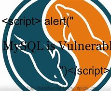

Om

Denna webbplats utvecklas som en del av kursen databas (v1).
Ännu en intressant kurs hos BTH. Nu ska vi lära oss mer om javascript och databaser, ER-modellering inte att förglömma. Det sägs att det inte bara handlar om vanliga kommandon som SELECT, UPDATE etc utan även mer databas-nära.
Jag börjar, nu i tredje delkursen, se hur upplägget lockar till letande - efter kompletterande information om det som lärts ut för att få uppgifterna att fungera, bilder som visar det ena och andra, mm.
Länk till mitt kursrepo på GitHub.